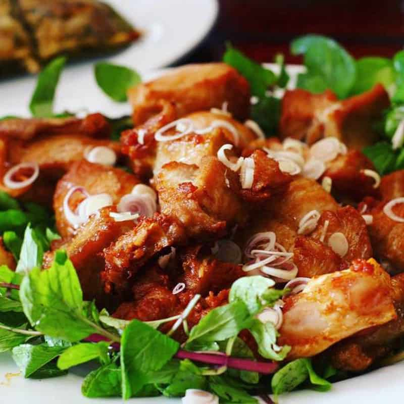
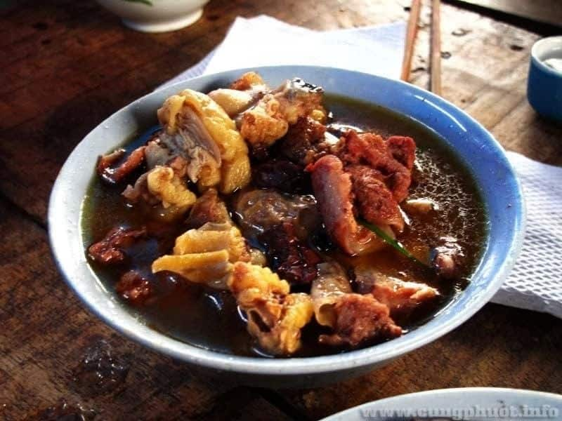
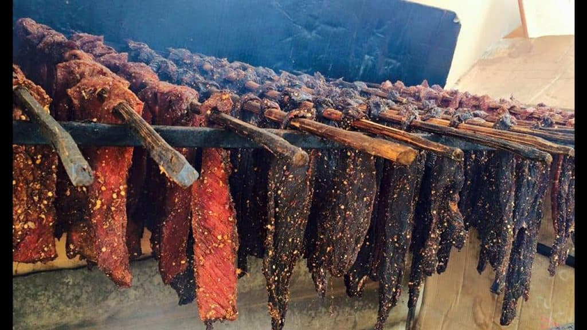
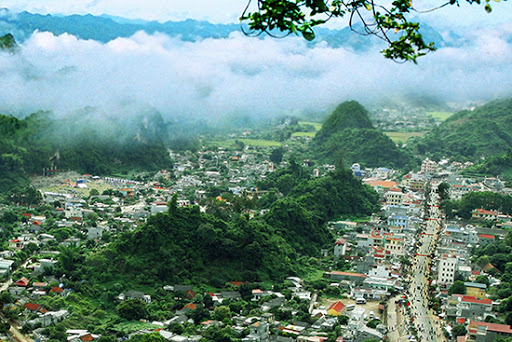
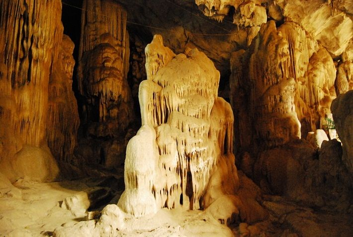
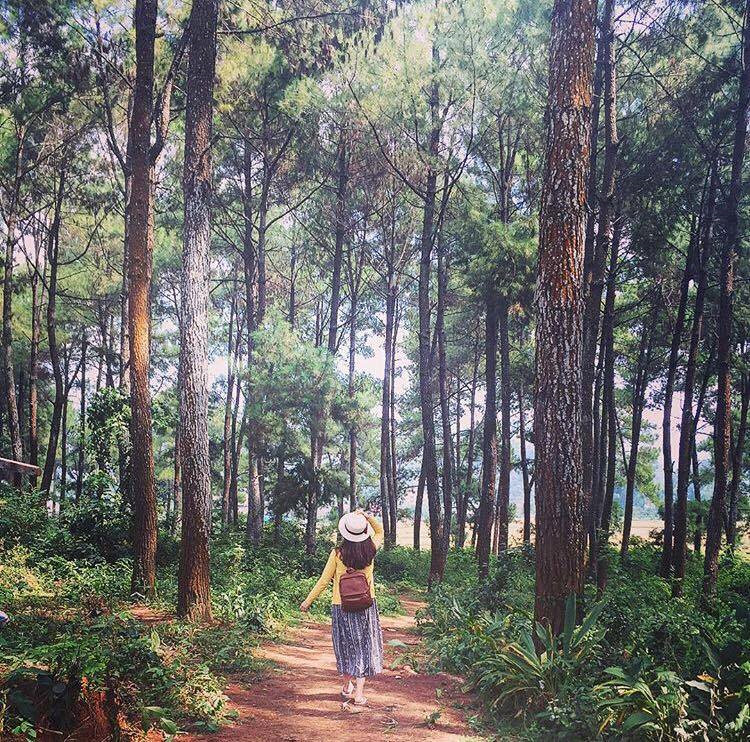

Giới Thiệu
Cách Hà Nội gần 200km về phía Tây Bắc theo quốc lộ 6, cao nguyên Mộc Châu là một điểm đến thú vị trên bản đồ du lịch Việt Nam. Với chiều dài khoảng 80km, rộng 25km trên cao độ 1.050m so với mực nước biển, ngay giữa cao nguyên đã hình thành một tiểu vùng khí hậu mát mẻ mang đặc trưng khí hậu cận ôn đới, với nhiệt độ trung bình 20ºC về mùa Hè và thường khô ráo hơn các vùng khác vào mùa Đông.
Mộc Châu là nơi tụ cư 12 dân tộc anh em gồm Thái (33%), Mông (18%), Kinh (15%), Lào, Hoa, Khơ Mú, Dao, Tày… với nhiều bản sắc văn hóa độc đáo, tập trung nhiều nhất tài nguyên du lịch tỉnh Sơn La và cả vùng núi Tây Bắc – Bắc bộ.
Ẩm thực
1. Bê chao
Nhắc đến món bê ngon là phải kể đến bê chao ở Mộc Châu. Thịt bê không cần chế biến quá cầu kỳ mà chỉ tầm ướp chao rồi đảo qua dầu sôi. Thế nhưng để có được một đĩa bê chao ngon không phải là điều đơn giản.Từng miếng thịt bê được cắt mỏng. Người nấu sẽ đem thịt ướp với sả, gừng, gia vị một cách thấm vị nhất. Công đoạn quan trọng nhất đó là chao thịt qua dầu. Người nấu phải thật chắc tay nấu thì mới cân chỉnh được thời gian đủ để thịt chín mền và không bị dai. Đĩa bê chao đúng chuẩn Mộc Châu sẽ có độ mền vừa đủ, ngọt và đặc biệt là bì giòn.

2. Nậm pịa
Bạn sẽ rất ngạc nhiên khi biết đến món nậm Pịa – món ăn ngon Mộc Châu đặc trưng. Rất nhiều du khách cho đây là món “kinh dị” vì thành phần của nó. Trong nồi nậm Pịa sẽ có những phần nội tạng của bò, ngựa, trâu hay dê như: lòng, dạ dày, ruột non,… Ngoài ra, nậm Pịa còn có tiết đông, sụn, đuôi, thịt nữa.

3. Thịt trâu gác bếp
Nếu muốn thưởng thức món ngon Mộc Châu thì nhất định phải nếm vài miếng thịt trâu gác bếp. Khi bạn ăn thịt gác bếp sẽ cảm nhận được vị ngọt ngọt, dai dai trong từng xớ thịt. Nhâm nhi chén rượu cùng vài miếng thịt rồi bạn lại cùng nhau chuyện trò giữa khung cảnh Mộc Châu sẽ là kỷ niệm đẹp cho chuyến đi.

Lịch sử
Từ thời Vua Hùng dựng nước, Mộc Châu thuộc bộ Tân Hưng- một trong 15 bộ của nước Văn Lang. Trải qua hàng ngàn năm với nhiều triều đại, Mộc Châu thuộc nhiều châu, đạo, quận khác nhau, Theo Dư địa chí của Nguyễn Trãi, vùng đất này có trung tâm ở khu vực xã Mường Sang ngày nay, có tên cổ là Mường Mok (sương mù).
Các địa điểm văn hóa hay khu vui chơi di tích
1. Đồi chè Mộc Châu
Với trên 3000ha chè, chỉ mới đến cửa ngõ Mộc Châu, nơi cổng chào, du khách đã thấy trước mắt mình, phía bên tay phải là một thảo nguyên mênh mông chè. Vì vậy, không khó để tìm thấy những điểm du lịch đồi chè ở Mộc Châu. Hiện nay, có một số điểm ngắm chè đẹp tại Mộc Châu như sau:
- - Đồi chè Shan tuyết đối diện công ty chè Mộc Châu
- - Đồi chè trái tim gần ngũ động Bản Ôn
- - Đồi chè Mộc Sương
2. Động Sơn Mộc Hương
Nằm tại trung tâm thị trấn Mộc Châu, với diện tích 6.915m2 còn có tên gọi khác là hang Sa Lai (Hang nước) vì trong lòng núi có mạch nước ngầm lớn trong xanh mát lạnh chảy quanh năm không bao giờ cạn, là nguồn nước cho bà con thị trấn Mộc Châu, nơi đây được ví như Tây Thiên Đệ Nhất Động, một kiệt tác nghệ thuật thiên nhiên ưu đãi ban tặng cho mảnh đất này.

3. Rừng thông Bản Áng
Cách thị trấn Mộc Châu 3km, du khách sẽ không khỏi ngỡ ngàng trước vẻ đẹp của hồ nước 5 ha nằm sát cạnh rừng thông có diện tích 43 ha trải dài trên dãy đồi đất feralít đỏ nâu tạo thành cảnh quan tự nhiên tuyệt đẹp.
Nơi đây có khí hậu trong lành, mát mẻ, cảnh sắc thơ mộng hữu tình. Đến với bản Áng du khách còn được trải nghiệm những nét đẹp những phong tục văn hóa truyền thống với những mái nhà sàn còn lưu giữ nhiều nghề truyền thống đan lát, làm đệm bông gạo, dệt thổ cẩm, những điệu xòe thôi thúc mời gọi, những làn điệu dân ca cổ, những lễ hội “Mừng cơm mới” “Hết Chá”...

Review khách sạn và homestay
1. Moc Chau Cottage homestay
Tọa lạc tại thị trấn Nông Trường Mộc Châu, Moc Chau Cottage homestay có nhà hàng, quầy bar, sảnh khách chung và khu vườn. Trong số các tiện nghi của nhà khách này còn có bếp chung, dịch vụ phòng và WiFi miễn phí trong toàn bộ khuôn viên. Chỗ nghỉ có thể bố trí chỗ đỗ xe riêng cho khách với một khoản phụ phí.Phòng nghỉ tại nhà khách được trang bị bàn làm việc và phòng tắm riêng với chậu rửa vệ sinh (bidet), máy sấy tóc cùng đồ vệ sinh cá nhân miễn phí.Moc Chau Cottage homestay phục vụ bữa sáng kiểu lục địa hoặc bữa sáng à la carte.Chỗ nghỉ có sân hiên. Du khách có thể chơi ném phi tiêu tại Moc Chau Cottage homestay và đạp xe là hoạt động được ưa chuộng trong khu vực.
2. Gió Đại Ngàn Homestay
Tọa lạc tại huyện Mộc Châu thuộc tỉnh Sơn La, Gió Đại Ngàn Homestay cung cấp chỗ nghỉ với WiFi miễn phí và chỗ đỗ xe riêng miễn phí.Homestay này phục vụ bữa sáng tự chọn và kiểu Á hàng ngày.Gió Đại Ngàn Homestay có sân hiên.Khách lưu trú tại chỗ nghỉ có thể đi bộ đường dài và đạp xe ở khu vực gần đó hoặc thư giãn trong vườn.

3. Thao Nguyen Resort
Thao Nguyen Resort ở huyện Mộc Châu này có nhà hàng, trung tâm thể dục, quán bar, sảnh khách chung, Wi-Fi miễn phí, vườn, sân tennis, lễ tân 24 giờ, dịch vụ phòng và dịch vụ thu đổi ngoại tệ.Phòng nghỉ được trang bị máy điều hòa, TV truyền hình vệ tinh màn hình phẳng, tủ lạnh, ấm đun nước, chậu rửa vệ sinh, máy sấy tóc và bàn làm việc. Phòng tắm riêng đi kèm vòi sen cùng đồ vệ sinh cá nhân miễn phí. Các phòng còn có tủ quần áo và tầm nhìn ra vườn.Resort có sân chơi cho trẻ em.